<Doctype! html>
<html>
<link rel="stylesheet" href="bootstrap.min.css">
 <link rel="stylesheet" href="css.css">
  <script src="jquery.min.js"></script>
  <script src="bootstrap.min.js"></script>
    <script type="text/javascript" src="jquery-2.1.3.min.js"></script>
    <script type="text/javascript" src="cycle2.js"></script>
	
	<body background="white" style="background-size:repeat; opacity:.9;">
	<div class="rcm">
			</img>
			<div class="cnecontainer">
			<p id="rcm" style="font-family:Roboto;margin-top:-4%; margin-left:4%;">Login</p>
		</div>
	</div>	
	<div class="rcms">
			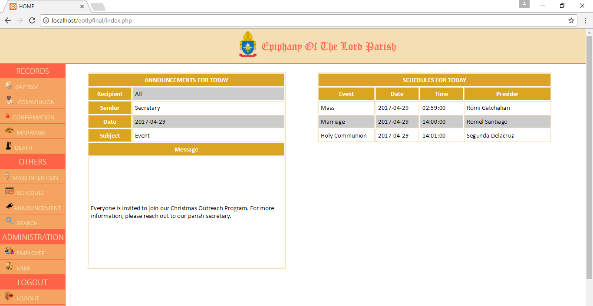</img>
			<div class="cnecontainer">
			<p id="rcms" style="font-family:Roboto;margin-top:-4%; margin-left:4%;">Home</p>
		</div>
	</div>	
	<div id="cemen">
			<p style="font-family:Roboto;">Record Management System</p>
		</div>
		<ul class="pbs" style="margin-left:7%;list-style:none;color:black;">
			<label style="margin-left:-5%;">Module</label<br>
			<li>Login</li>
			<li>Admin</li>
			<li>Baptism</li>
			<li>Communion</li>
			<li>Confirmation</li>
			<li>Marriage</li>
			<li>Death and Mass intention</li>
			<li>Schedule and Employee</li>
			<li>Search and Announcement </li>
			<li>User and Logout</li>
			<hr style="border-color:black;">
			<li>Description <br>Record Management System for Epiphany of the lord Parish project for database with client. This system is more on record on inquirer of epiphany of the lord parish.This system can perform crud,search and printing a certificate for the inquirer,can allow user to login and logout and redirect to web page base on the user level where they belong.</li>
		</ul>
	<div id="container">
		<div id="slideshow" class="cycle-slideshow"
		data-cycle-fx = "fade"
		data-cycle-speed = "600"
		data-cycle-timeout = "0"
		data-cycle-pager = "#pager"
		data-cycle-pager-template ="<a herf='#'>"
		data-cycle-next = "#nextrecord"
		data-cycle-prev = "#prevrecord"
		data-cycle-manual-fx = "scrollHorz"
		data-cycle-manual-speed = "400"
		data-cycle-pager-fx = "fade">
        
        
		
		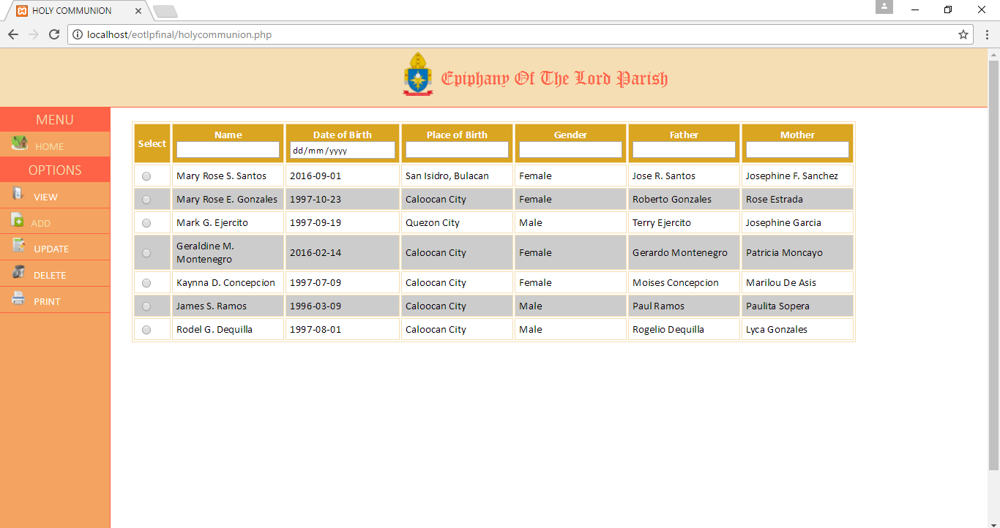
		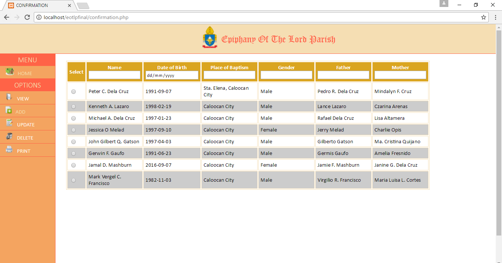
		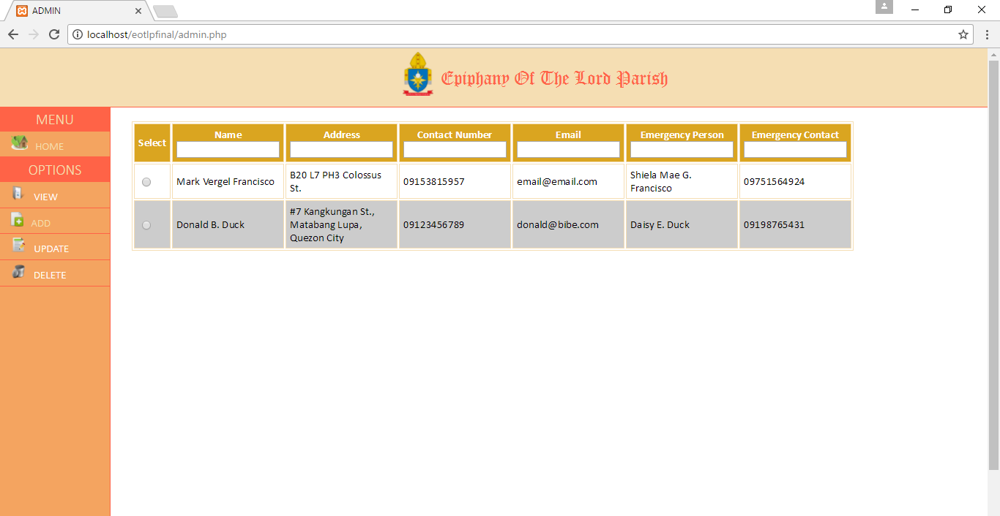
		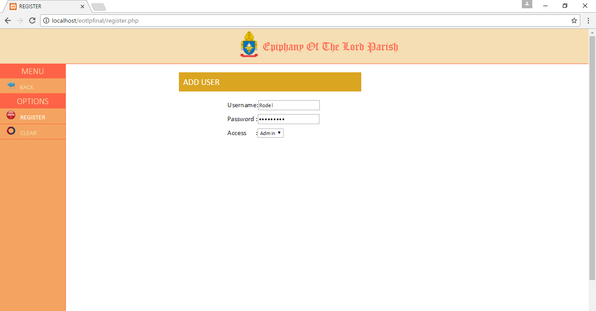
		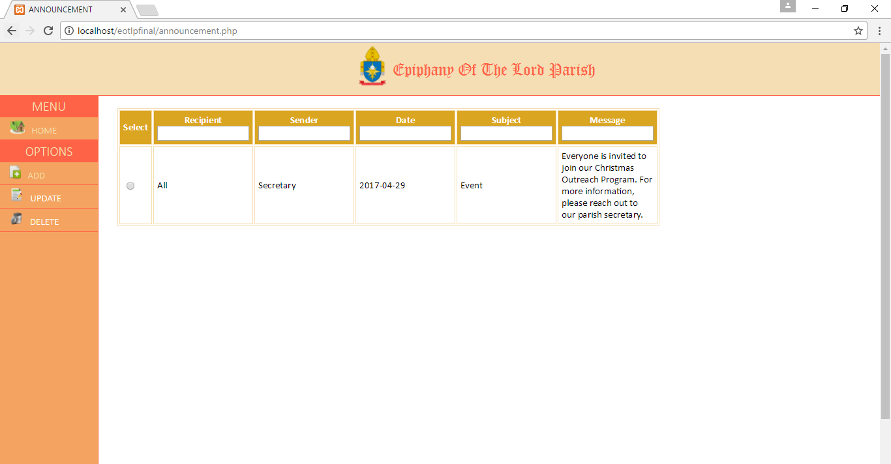
		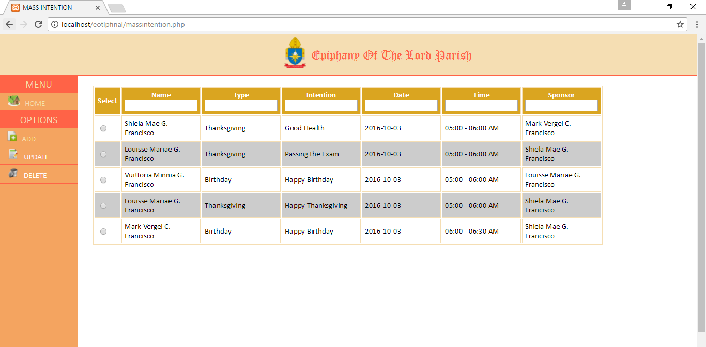
		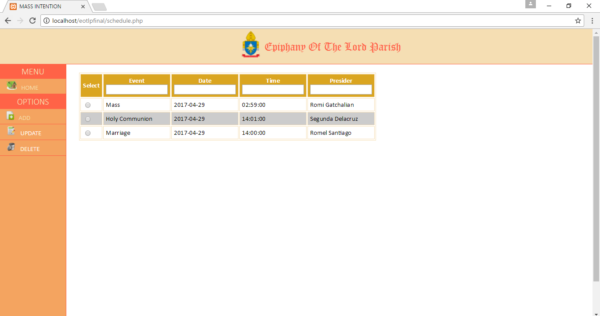
		
		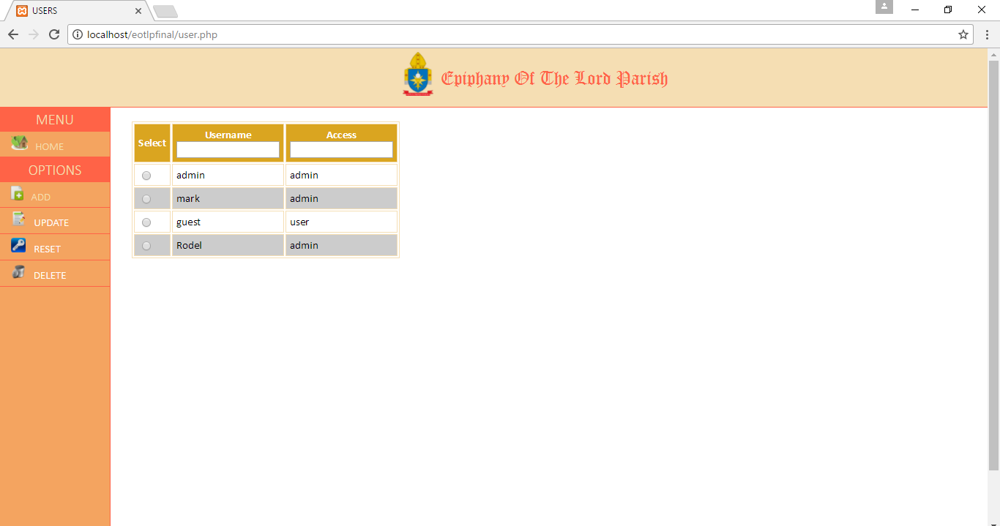
		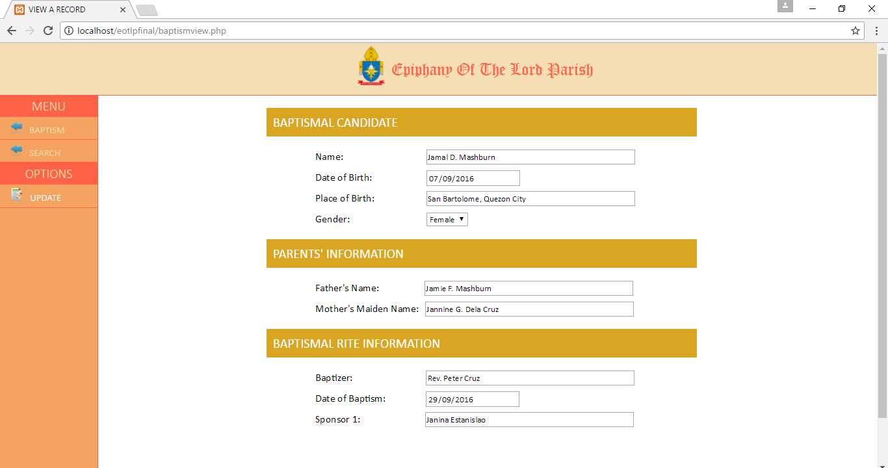
		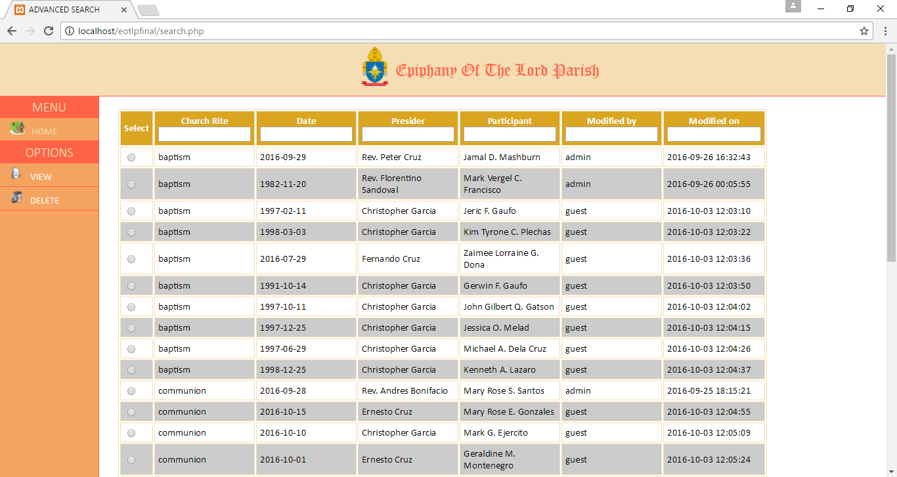
		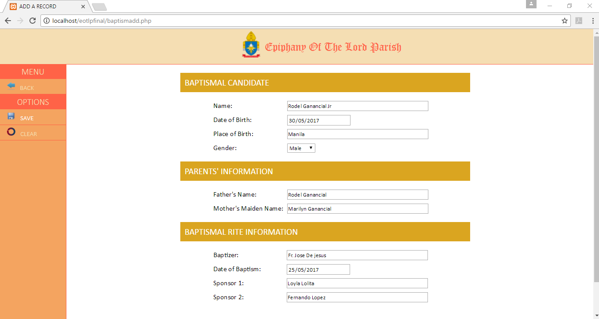
		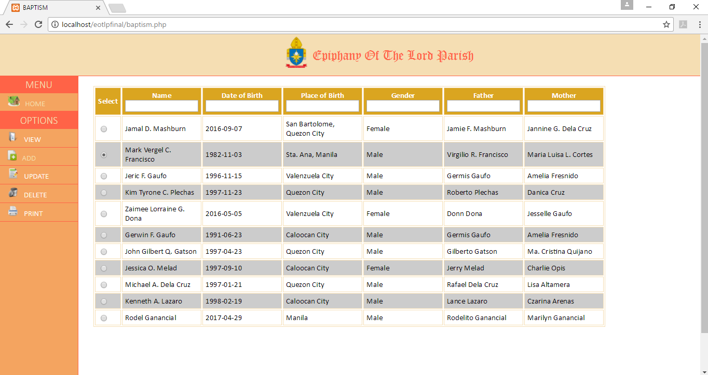
		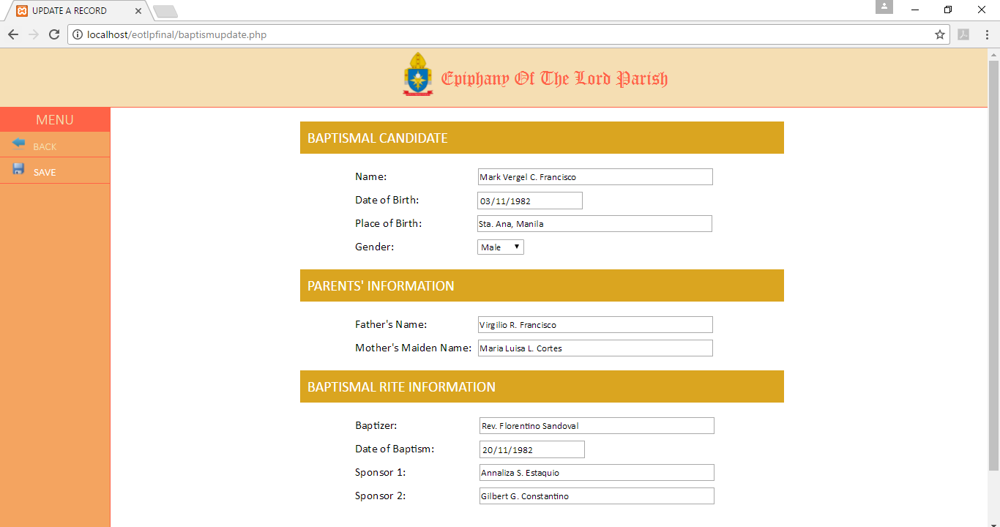
		
		
		
    </div>
    <div id="pager"></div>
    
    
</div>
<a href="index.html"><input type="button" name="Back" value="Back"></a></input>
	</body>
	<script src="http://ajax.googleapis.com/ajax/libs/jquery/1/jquery.min.js"></script>
<script src="jquery.fittext.js"></script>
<script type="text/javascript">
		$("#cemen").fitText();
		$("ul").fitText(1.2, { minFontSize: '8px', maxFontSize: '25px' });
		$("#rcm").fitText(1.2, { minFontSize: '10px', maxFontSize: '20px' });
		$("#rcms").fitText(1.2, { minFontSize: '10px', maxFontSize: '20px' });
	</script>
</html>